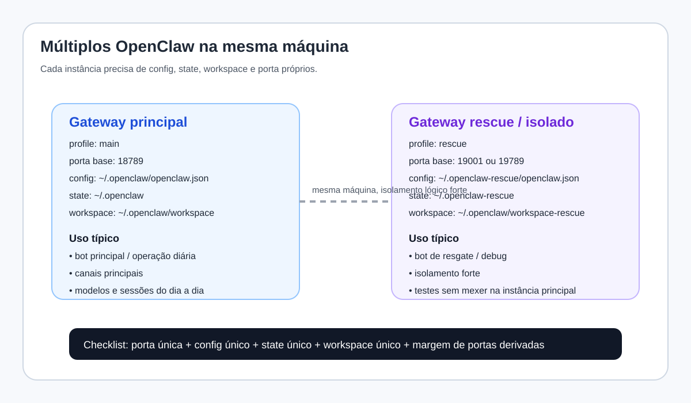
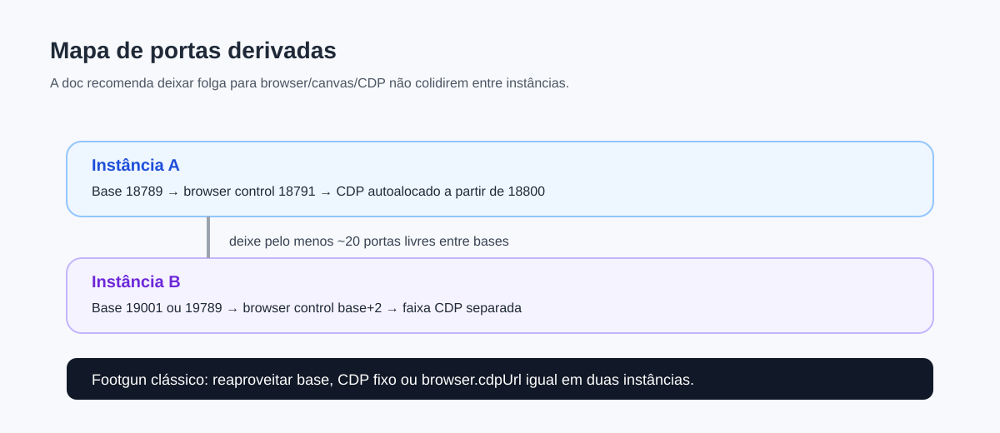

Rodar mais de um OpenClaw no mesmo host é totalmente viável, mas só funciona bem quando você trata cada instância como um sistema isolado em portas, config, state e workspace.
Como rodar múltiplos OpenClaw na mesma máquina
A maioria dos setups deveria usar um único Gateway, porque um gateway só já suporta múltiplos agentes, múltiplos canais e múltiplas contas. Mesmo assim, há cenários em que vale rodar duas ou mais instâncias no mesmo host: isolamento forte, ambientes separados, bot de resgate, testes arriscados sem tocar na instância principal, ou operação de perfis distintos para pessoas/funções diferentes.
Quando vale a pena ter múltiplos OpenClaw
- Rescue bot: um segundo gateway que continua funcionando se o principal quebrar.
- Ambientes distintos: um OpenClaw pessoal e outro de laboratório/testes.
- Separação de risco: uma instância com browser/sandbox/ferramentas mais permissivas e outra mais fechada.
- Perfis independentes: configs, credenciais e estados totalmente separados.
Quando NÃO vale a pena
- Quando você só quer múltiplas personas.
- Quando o objetivo é apenas rotas diferentes por canal ou conta.
- Quando você não tem disciplina para separar state/config/portas.
- Quando o custo operacional da complexidade será maior do que o benefício.
O princípio de isolamento
A doc oficial é bem clara: para rodar múltiplos gateways no mesmo host, cada instância precisa de um conjunto isolado de recursos. O checklist mínimo é:
OPENCLAW_CONFIG_PATHOPENCLAW_STATE_DIRagents.defaults.workspacegateway.portSe você compartilhar qualquer uma dessas peças, o resultado típico é feio: corrida de config, colisão de sessão, confusão de credenciais, conflito de portas e estado corrompido.
Diagrama 1 — Topologia recomendada

Plano detalhado: desenho recomendado
O desenho mais seguro e didático é usar profiles. A própria doc recomenda isso, porque profiles já ajudam a separar config/state e dão nomes de serviço diferentes.
Plano em 7 passos
- Defina o papel de cada instância.
Ex.: principal, rescue, lab, work, family, testing. - Escolha um profile por instância.
Ex.:main,rescue,lab. - Escolha uma porta base diferente para cada uma.
Deixe folga para portas derivadas. - Garanta state/config/workspace únicos.
Nada de reaproveitar diretórios por conveniência. - Instale e valide uma instância por vez.
Não suba duas de uma vez sem checar o primeiro baseline. - Valide browser/CDP/control ports.
Esse é um dos footguns mais comuns. - Documente tudo.
Profile, porta base, finalidade, serviço, workspace e canais de cada instância.
Exemplo prático com profile principal e rescue
# principal
openclaw --profile main setup
openclaw --profile main gateway --port 18789
# rescue
openclaw --profile rescue setup
openclaw --profile rescue gateway --port 19001Isso já coloca cada instância em trilhos melhores do que sair mexendo só com env vars manuais. Depois, para operação contínua:
openclaw --profile main gateway install
openclaw --profile rescue gateway install
openclaw --profile main status
openclaw --profile rescue statusExemplo manual com variáveis de ambiente
Se você precisa de um setup mais controlado, a doc também mostra o caminho manual:
OPENCLAW_CONFIG_PATH=~/.openclaw/main.json \
OPENCLAW_STATE_DIR=~/.openclaw-main \
openclaw gateway --port 18789
OPENCLAW_CONFIG_PATH=~/.openclaw/rescue.json \
OPENCLAW_STATE_DIR=~/.openclaw-rescue \
openclaw gateway --port 19001Isso funciona, mas exige mais disciplina sua. Profile tende a ser menos sujeito a erro humano.
Portas derivadas: o footgun clássico
Muita gente lembra de mudar a porta principal e esquece que há portas derivadas. No OpenClaw, a porta base influencia browser control, CDP e outras superfícies associadas. Por isso a doc recomenda deixar folga de pelo menos ~20 portas entre bases.
Diagrama 2 — Mapa de portas derivadas

Resumo operacional:
- porta base =
gateway.port - browser control = base + 2
- faixas CDP são derivadas a partir da área do browser control
- se você fixar CDP manualmente em duas instâncias, pode causar colisão silenciosa
browser.cdpUrl ou browser.profiles.<name>.cdpPort iguais. A colisão não some só porque a porta principal mudou.Gráfico mental: o que precisa ser separado
Instância A
├─ config A
├─ state A
├─ workspace A
├─ port A
└─ portas derivadas A
Instância B
├─ config B
├─ state B
├─ workspace B
├─ port B
└─ portas derivadas BSe qualquer galho desse grafo apontar para o mesmo recurso físico nas duas instâncias, você perde o isolamento.
Plano recomendado por cenário
main em 18789 e rescue em 19001/19789, com state/config/workspace totalmente separadosmain e lab, com modelos/skills/config independentesChecklist de implantação segura
Checklist antes de subir a segunda instância
- Escolhi uma porta base realmente diferente?
- O state dir é outro?
- O config path é outro?
- O workspace é outro?
- As portas derivadas não colidem?
- Os serviços systemd/launchd terão nomes diferentes?
- As credenciais/canais dessa instância estão claramente separadas?
Teste de sanidade depois da instalação
openclaw --profile main status
openclaw --profile rescue status
openclaw --profile rescue browser statusEm seguida, valide:
- cada instância responde na sua porta
- cada uma usa seu workspace
- cada uma vê seu próprio state/sessions
- browser e CDP não disputam a mesma faixa
Arquitetura recomendada em produção leve
Se eu fosse desenhar isso numa máquina só, faria assim:
Instância principal
operações do dia a dia, canais principais, workspace estável, serviços mais usados.
Instância rescue
mínima, enxuta, bem documentada, pronta para inspecionar e recuperar a principal.
Instância lab (opcional)
experimentos com ferramentas, browser, sandboxes, conteúdos novos e testes mais arriscados.
Essa tripla já cobre a maioria dos cenários sérios sem virar caos administrativo.
Comparação honesta: multi-agent vs múltiplos gateways
Em resumo: multi-agent resolve diversidade de cérebros; múltiplos gateways resolvem isolamento de processo.
Problemas típicos e como pensar neles
- EADDRINUSE: quase sempre colisão de porta base ou derivada.
- Sessões misturadas: state dir reaproveitado.
- Workspace errado: profile/config apontando para diretório compartilhado.
- Browser estranho: CDP/control ports colidindo.
- Rescue que não resgata: mesma credencial/mesma config quebrada reproduzida nas duas instâncias.